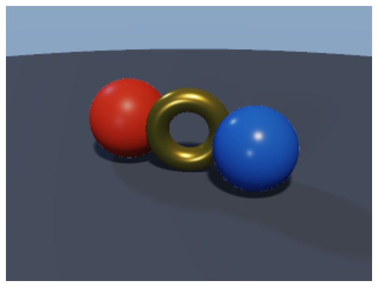
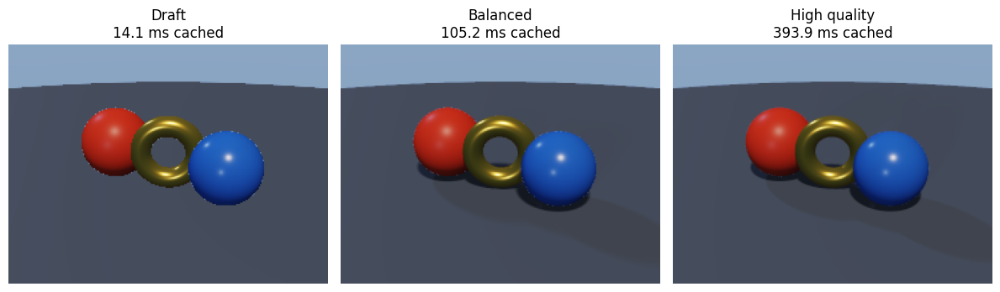

from time import perf_counter
import jax.numpy as jnp
import matplotlib.pyplot as plt
import numpy as np
from cadjoint.render import Camera, Material, RenderSettings, Scene, make_gradient_sky, render_scene
from cadjoint.sdf.boolean import Union
from cadjoint.sdf.primitives import Plane, Sphere, Torus
from cadjoint.sdf.transforms import Rotate, TranslateRendering
cadjoint renders SDF scenes two ways, and this notebook covers both:
- Forward raymarcher — a JAX image renderer (early-exit sphere tracing, reconstructed silhouettes, GGX materials, soft shadows, reflections, refraction) that produces an array you can display or save.
- WebGPU viewer — the same scene compiled through StableHLO to WGSL and rendered live in the browser, with orbit/zoom/pan controls.
Geometry and constraints stay JAX-native and differentiable; rendered pixels are deliberately not an optimization interface.
Forward rendering
A scene groups geometry, camera, lights, and environment. Quality lives in a separate RenderSettings, so the same scene can be drawn at any fidelity.
ground_height = -0.92
geometry = Union(
Translate(
Sphere(0.82, material=Material(color=[0.78, 0.06, 0.025], roughness=0.42)),
[-1.45, -0.098, 0.0],
),
Translate(
Rotate(
Torus(
0.62,
0.23,
material=Material(
color=[1.0, 0.58, 0.08], roughness=0.28, metallic=0.8, reflectivity=0.35
),
),
axis="y",
angle=0.45,
),
[0.0, -0.068, 0.0],
),
Translate(
Sphere(0.78, material=Material(color=[0.035, 0.18, 0.72], roughness=0.28)),
[1.4, -0.138, 0.0],
),
Plane(ground_height, material=Material(color=[0.1, 0.12, 0.16], roughness=0.72)),
smoothness=0.0,
)
scene = Scene(
geometry,
camera=Camera(position=(4.4, 3.5, 7.5), target=(0.0, -0.35, 0.0), fov=0.38),
light_directions=((0.35, 1.0, 0.55), (-0.65, 0.45, -0.2), (0.15, 0.2, 1.0)),
light_colors=((1.5, 1.35, 1.15), (0.22, 0.3, 0.5), (0.2, 0.23, 0.3)),
environment_map=make_gradient_sky(
sky_color=(0.7, 0.76, 0.88),
horizon_color=(0.18, 0.27, 0.44),
ground_color=(0.16, 0.18, 0.24),
),
)image = render_scene(scene, RenderSettings.balanced((240, 320)))
plt.figure(figsize=(8, 6))
plt.imshow(image)
plt.axis("off");
Quality presets
The named presets make the performance/fidelity trade-off explicit. draft uses direct lighting with a shorter trace budget, balanced enables soft shadows and 2×2 supersampling, and high_quality adds tighter precision and 3×3 supersampling. They are immutable dataclasses, so use dataclasses.replace for scene-specific changes. Each distinct static preset compiles once; the timings below are steady-state medians after that compile.
presets = {
"Draft": RenderSettings.draft((180, 240)),
"Balanced": RenderSettings.balanced((180, 240)),
"High quality": RenderSettings.high_quality((180, 240)),
}
images, steady_ms = {}, {}
for name, preset in presets.items():
images[name] = render_scene(scene, preset) # compile / warm up
timings = []
for _ in range(5):
start = perf_counter()
images[name] = render_scene(scene, preset)
timings.append((perf_counter() - start) * 1e3)
steady_ms[name] = np.median(timings)
fig, axes = plt.subplots(1, 3, figsize=(12, 4))
for axis, (name, rendered) in zip(axes, images.items()):
axis.imshow(rendered)
axis.set_title(f"{name}\n{steady_ms[name]:.1f} ms cached")
axis.axis("off")
plt.tight_layout()
Compile once, render repeatedly
The first call includes JAX compilation. Later calls with the same scene, image shape, and static feature set reuse the module-level compiled renderer.
settings = RenderSettings.balanced((128, 160))
start = perf_counter()
render_scene(scene, settings)
compile_and_render_ms = (perf_counter() - start) * 1e3
samples = []
for _ in range(10):
start = perf_counter()
render_scene(scene, settings)
samples.append((perf_counter() - start) * 1e3)
print(f"first call: {compile_and_render_ms:.1f} ms")
print(f"cached median: {np.median(samples):.2f} ms")first call: 559.5 ms
cached median: 52.77 msEarly termination
A direct sphere hit should consume only a small fraction of the available step budget. Misses also stop at max_distance rather than evaluating the SDF for every configured step.
from cadjoint.render.raymarch import _sphere_trace
def sphere_sdf(point):
return jnp.linalg.norm(point) - 1.0
hit = _sphere_trace(
sphere_sdf, jnp.array([0.0, 0.0, 5.0]), jnp.array([0.0, 0.0, -1.0]), max_steps=96
)
miss = _sphere_trace(
sphere_sdf, jnp.array([0.0, 5.0, 0.0]), jnp.array([0.0, 0.0, 1.0]), max_steps=96
)
print(f"hit: distance={float(hit.distance):.3f}, steps={int(hit.steps)}, hit={bool(hit.hit)}")
print(f"miss: distance={float(miss.distance):.3f}, steps={int(miss.steps)}, hit={bool(miss.hit)}")hit: distance=4.000, steps=4, hit=True
miss: distance=20.000, steps=4, hit=FalseInteractive WebGPU viewer
The same scenes can be compiled to WebGPU Shading Language (WGSL) through JAX’s StableHLO export and rendered live in the browser with SDFViewer:
JAX scene → jax.export → StableHLO MLIR → WGSL → WebGPU fragment shaderNeeds the viewer extra (uv sync --extra viewer) and a WebGPU-capable browser (Chrome/Edge 113+).
Controls — left-drag: orbit · scroll: zoom · right-drag: pan · double-click: reset
from cadjoint.backends.wgsl import compile_sdf_to_wgsl
from cadjoint.sdf.boolean import Difference
from cadjoint.sdf.primitives import Box, Capsule
from cadjoint.viewer import SDFViewer
SDFViewer(Sphere(1.0))Boolean operations
smoothness blends the operands instead of producing a hard seam.
sphere = Sphere(1.0)
box = Translate(Box([1.3, 1.3, 1.3]), offset=jnp.array([0.5, 0.3, 0.0]))
SDFViewer(Union(sphere, box, smoothness=0.2))SDFViewer(Difference(sphere, box, smoothness=0.05))Complex scene — blob of spheres
The entire tree is compiled to a single WGSL function — the GPU evaluates the SDF directly with no intermediate mesh.
blob = Union(
Sphere(0.80),
Translate(Sphere(0.70), offset=jnp.array([1.2, 0.2, 0.0])),
Translate(Sphere(0.55), offset=jnp.array([0.5, 0.9, -0.7])),
Translate(Sphere(0.50), offset=jnp.array([-1.0, 0.4, 0.5])),
Translate(Sphere(0.40), offset=jnp.array([0.1, 1.3, 0.3])),
smoothness=0.30,
)
cutter = Translate(Box([0.9, 0.28, 0.9]), offset=jnp.array([0.9, 1.0, 0.4]))
SDFViewer(Difference(blob, cutter, smoothness=0.05), height=400)Hot-reload — edit the scene without losing camera state
Create a viewer once, then call update_scene() to swap in a new SDF. The camera stays where it is; only the shader recompiles.
viewer = SDFViewer(Sphere(1.0))
viewer# Run this cell to swap the scene — the viewer above updates instantly
viewer.update_scene(
Union(
Sphere(0.9),
Translate(Capsule(radius=0.3, height=1.4), offset=jnp.array([1.2, 0.0, 0.0])),
smoothness=0.15,
)
)Inspect the compiled WGSL
compile_sdf_to_wgsl returns the raw shader source — useful for debugging or for exporting to a standalone WebGPU application.
print(compile_sdf_to_wgsl(Union(sphere, box, smoothness=0.1)))fn sdf___where_1(_arg0: bool, _arg1: f32, _arg2: f32) -> f32 {
let _v0: f32 = select(_arg2, _arg1, _arg0);
return _v0;
}
fn sdf___where(_arg0: bool, _arg1: f32, _arg2: f32) -> f32 {
let _v0: f32 = f32(_arg1);
let _v1: f32 = select(_arg2, _v0, _arg0);
return _v1;
}
fn sdf__norm(_arg0: vec3<f32>) -> f32 {
let _v0: f32 = 0.000000;
let _v1: vec3<f32> = _arg0 * _arg0;
let _v2: f32 = _v0 + dot(_v1, vec3<f32>(1.0, 1.0, 1.0));
let _v3: f32 = sqrt(_v2);
return _v3;
}
fn sdf(p: vec3<f32>) -> f32 {
let _v0: f32 = 0.250000;
let _v1: f32 = 1e-10;
let _v2: f32 = 4.000000;
let _v3: f32 = 0.000000;
let _v4: f32 = -3.402823e38;
let _v5: f32 = 1.000000;
let _v6: vec3<f32> = vec3<f32>(0.500000, 0.300000, 0.000000);
let _v7: vec3<f32> = vec3<f32>(1.300000, 1.300000, 1.300000);
let _v8: f32 = 0.100000;
let _v9: f32 = sdf__norm(p);
let _v10: f32 = f32(_v5);
let _v11: f32 = _v9 - _v10;
let _v12: vec3<f32> = p - _v6;
let _v13: vec3<f32> = abs(_v12);
let _v14: vec3<f32> = _v13 - _v7;
let _v15: f32 = max(_v4, max(max(_v14.x, _v14.y), _v14.z));
let _v16: vec3<f32> = vec3<f32>(_v3);
let _v17: vec3<f32> = max(_v14, _v16);
let _v18: vec3<f32> = _v17 * _v17;
let _v19: f32 = _v3 + dot(_v18, vec3<f32>(1.0, 1.0, 1.0));
let _v20: bool = _v15 <= _v3;
let _v21: f32 = sdf___where(_v20, _v5, _v19);
let _v22: f32 = sqrt(_v21);
let _v23: f32 = sdf___where_1(_v20, _v15, _v22);
let _v24: f32 = _v8 * _v2;
let _v25: f32 = max(_v24, _v1);
let _v26: f32 = _v11 - _v23;
let _v27: f32 = abs(_v26);
let _v28: f32 = f32(_v25);
let _v29: f32 = _v28 - _v27;
let _v30: f32 = max(_v29, _v3);
let _v31: f32 = min(_v11, _v23);
let _v32: f32 = _v30 * _v30;
let _v33: f32 = _v32 * _v0;
let _v34: f32 = f32(_v25);
let _v35: f32 = _v33 / _v34;
let _v36: f32 = _v31 - _v35;
return _v36;
}